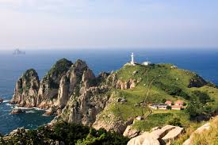

거제도는 경상남도 남동쪽에 위치한 섬으로, 그 유명한 바다와 자연 경관으로 유명합니다. 특히 맑고 깨끗한 바다와 여러 해안 경관이 매력적이며, 독특한 지형과 자연생태를 자랑합니다. 또한 거제도는 풍부한 역사와 문화 유산을 가지고 있어 방문객들에게 다양한 경험을 제공합니다. 자연 보호구역과 관리되는 해변 등 자연 사랑하는 사람들에게 이상적인 여행지입니다.
거제도의 날씨는 일반적으로 쾌적하고 온화합니다. 봄과 가을에는 기온이 적당하고 바람이 부드럽습니다. 여름에는 더욱 따뜻하고 해변에서 수영하기에 적합한 날씨가 많습니다. 겨울에는 쌀쌀하고 대체로 맑은 날씨를 경험할 수 있으며, 특히 바다를 배경으로 한 겨울 풍경은 아름답습니다.
